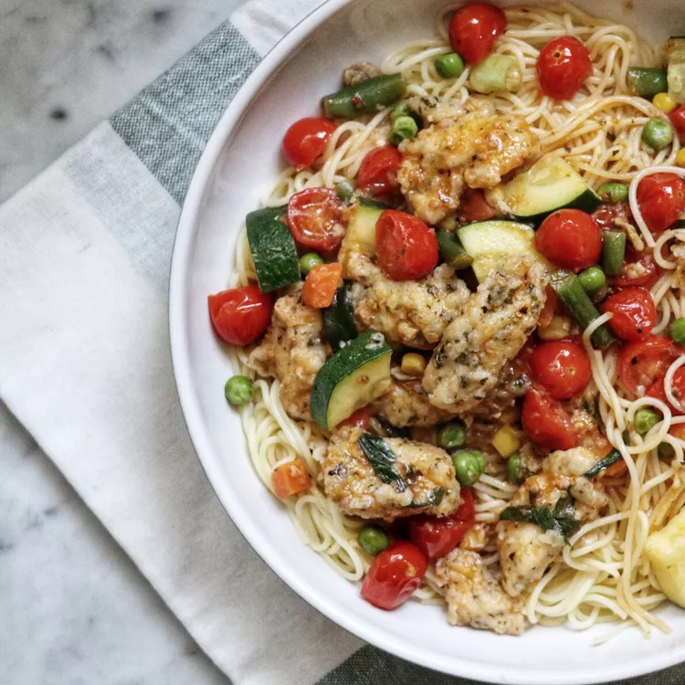

Easy Chicken Primavera

This is a quick and easy chicken primavera recipe that my family loves. It's made with chicken, vegetables, and sun-dried tomato pesto. Serve over hot cooked pasta, if desired.
Ingredients
- ½ cup all-purpose flour
- 1 tablespoon dried parsley
- 1 teaspoon dried basil
- 1 ½ pounds skinless, boneless chicken breasts, cut into strips
- ¼ cup extra-virgin olive oil
- 1 tablespoon minced garlic
- 2 ¼ cups low-sodium chicken stock, or to taste
- 1 cup frozen mixed vegetables
- 1 pint grape tomatoes, halved
- 1 bunch green onions, diagonally sliced
- 1 medium zucchini, quartered and sliced
- 2 tablespoons sun-dried tomato pesto
- salt and ground black pepper to taste
Directions
- Whisk flour, parsley, and basil together in a medium bowl. Add chicken strips and toss well until coated.
- Heat olive oil in a large skillet over medium heat. Add chicken and cook, turning occasionally, until lightly browned on the outside and no longer pink, about 10 minutes.
- Stir in garlic. Add chicken stock, mixed vegetables, grape tomatoes, green onions, zucchini, and pesto. Cook, stirring occasionally, until heated through, about 8 to 10 minutes.
Back to Home